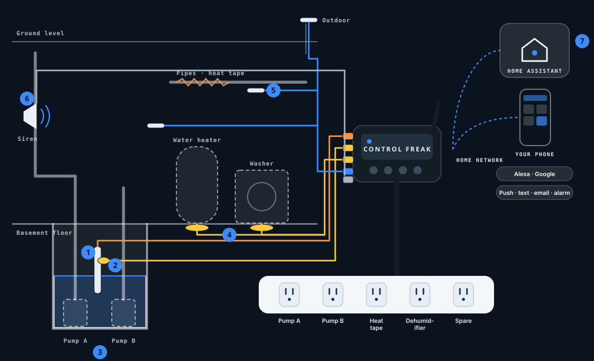

How many apps do you open to run your home?
Basement Guard Pro ships with Home Assistant and the Control Freak integration already set up, so your sump, leak sensors and the rest of your smart home meet in one place. Connect the devices you already own and simplify to a single app. Multi-platform integration built in: ask Alexa what the status is, tell Google to adjust the temperature, and receive automated voice alerts to let you know when something is out of balance. Home Assistant stays on your home network.
Peace of mind when you’re away.
For homeowners with a basement sump who want a second pump that actually takes turns — second-home and rental owners who can’t check in person, and Home Assistant users who’ve built sump sensors by hand and want it done properly. Self-install: set the pumps in the pit, plug them into the Power Hub, drop in the level sensor, scan the QR code. No rewiring.
What makes it different
Two pumps take turns
Plug in the two pumps you already own. The lead swaps every week so both wear evenly, and the two never start at the same moment.
Second pump steps in
If the water keeps rising, the second pump is brought in automatically and you get a note.
See the water level
Pit depth in inches and how fast it’s rising — not just alarm / no alarm.
Pumps work even if the controller doesn’t
Pump outlets stay on if the controller is ever off, and each pump keeps its own float switch.
Pump check-up
Spots a slow pump-down or a pump that didn’t empty the pit. Weekly pump test included.
Leak and freeze watch
Leak sensors by the water heater and washer, a high-water float as a second check, temperature probes — plug-in heat tape switches on when it gets cold.
Alerts that reach you
Push, text, email and alarm, including when you’re away — plus a siren in the house that sounds whether or not the internet is up.
Home Assistant pre-installed
One hub for basement and home. Ask Alexa what the status is, tell Google to adjust the temperature, get voice alerts.
What’s in Basement Guard Pro
- Controller with Home Assistant + Control Freak integration
- Power Hub — labelled outlets for two sump pumps, plug-in heat tape, a dehumidifier and a spare
- Pit level sensor (depth and rate of rise)
- High-water float (second check)
- Leak sensors (water heater + washer)
- Temperature probes (basement, crawlspace, water heater area, outdoor)
- Siren for inside the house
- Backup inverter hook-up — switches on an inverter you already own
- Keyed, colour-coded cables
Your sump pumps aren’t in the box — you keep the ones you have. Every sensor is its own line on the cart: the recommended package costs less than the same lines bought separately, and you can skip any you already own.
Optional add-ons
UPS to keep the controller (and ideally your router) running in a power cut; a 12 V battery backup pump from a partner; and automatic water shutoff as an option — closes the main when a leak sensor gets wet, plumber-installed.
What it isn’t: not for sewage ejector or commercial duplex pits, heat tape and dehumidifier are plug-in only, no subscription, and Home Assistant never runs in the cloud.
Two pumps, one watchful hub.
Plug the two pumps you already own into the Power Hub, drop in the level sensor, scan the QR code. No rewiring — and your pumps keep their own float switches.

- Pit level sensorPit depth in inches and how fast it’s rising — not just “alarm / no alarm.”
- High-water floatA second check if the water keeps rising.
- Your two pumpsThey take turns every week; the second steps in if the water keeps rising. Pump outlets stay on if the controller is ever off.
- Leak sensorsBy the water heater and the washer.
- Temperature probesBasement, crawlspace, water heater area and outdoor. Heat tape switches on when it gets cold.
- SirenSounds in the house whether or not the internet is up.
- Home Assistant, pre-installedAlerts by push, text, email and alarm — including when you’re away.
Try the home screen
Simulate a storm and watch the second pump wait its turn, run the weekly pump test, swap the lead pump, try a cold snap, or preview a sample alert.
This is a marketing simulation with example data — not live hardware and not the real app. No login, no cloud.
Join the beta
We’re looking for homeowners to test Basement Guard Pro in their own basements before launch.
Join the betaPrice to be announced.